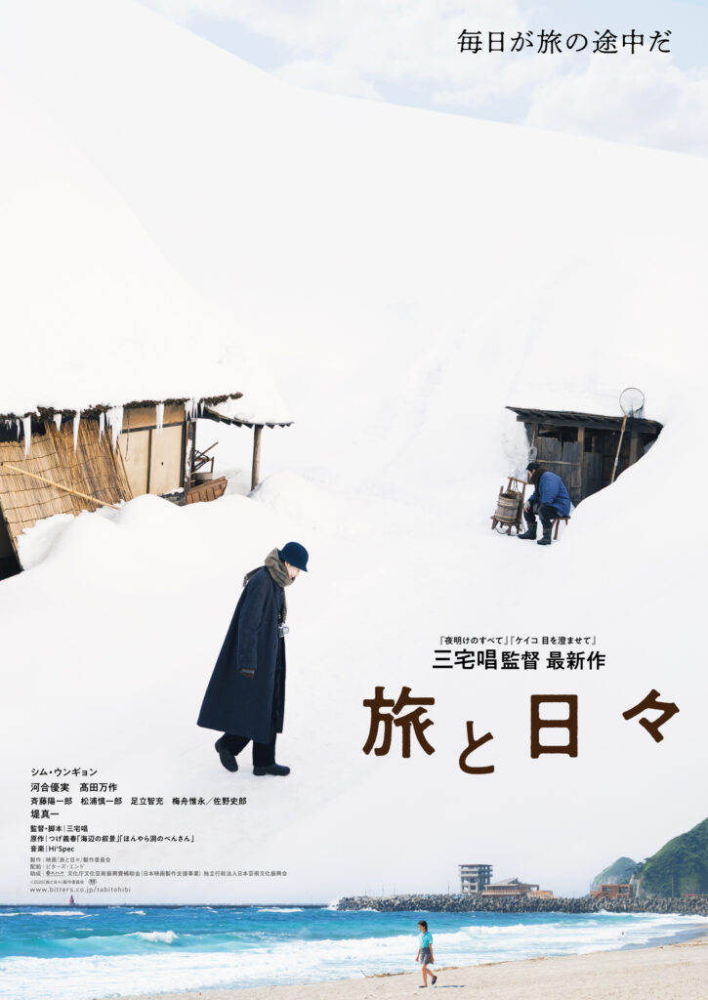
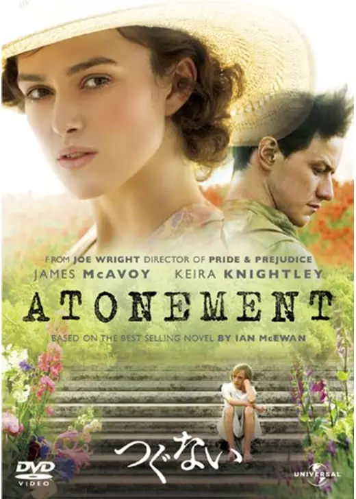

🥉 3位

展開は無いけど個人的には好きな映画。言葉の檻から抜け出るために旅をするのかもというのが妙に納得した。 何かと説明責任を求められる世の中で心の安息というか言葉で表せない感動を得る為に僕らは旅をするのかも
詳細を見る評価：★4.0

展開は無いけど個人的には好きな映画。言葉の檻から抜け出るために旅をするのかもというのが妙に納得した。 何かと説明責任を求められる世の中で心の安息というか言葉で表せない感動を得る為に僕らは旅をするのかも
詳細を見る
少女が多感な時期についた決して許されるわけのない嘘。 ロビーとシーがあまりにも可哀想すぎてただただ切ない。 2人とも死んでしまって償う機会も得られず、、、映像綺麗だけど落ち込む映画だね
詳細を見る他の人も言う様に今年のNo.1邦画はこれ。3時間が時間の意味じゃなく内容的に苦しかった
詳細を見る